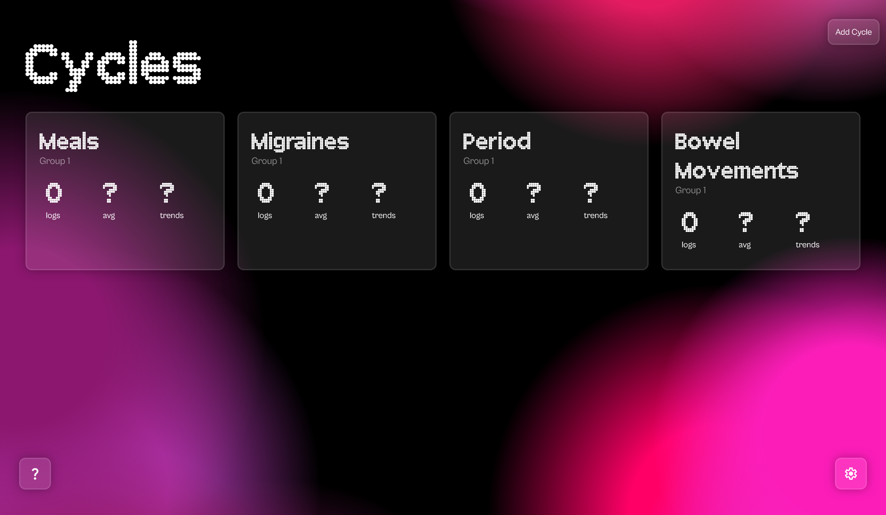

Cycles
Helping every user discover their body's truth
trackyourcycles.com Motivation
Cycles is a project I started with a friend because we shared chronic, hard-to-treat conditions that we couldn't make heads or tails of.
I've had migraines for about as long as I can remember, and no neurologist can tell me why. But maybe, I thought, I could find trends and relationships by tracking everything about my life.
With Cycles, users can log all the patterns in their lives - when they eat, how much they drink, when the headaches come - and the app models future instances and searches for trends between different cycles.
Technical Details
For prediction, Cycles uses an autoregressive multilinear regression model. For finding trends, Cycles searches through pairs between datasets to determine monotonicity.
Cycles works like an app because it's a PWA, so it can be added to your home screen and launches in app mode rather in the browser.
Challenges
We faced struggles with the multiregressive model as we created the app, and the PWA architecture is still buggy on iOS devices.